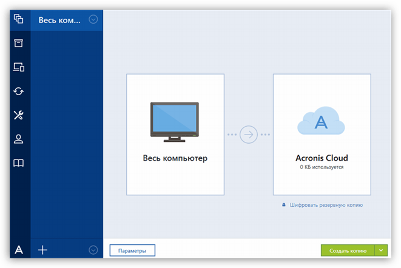
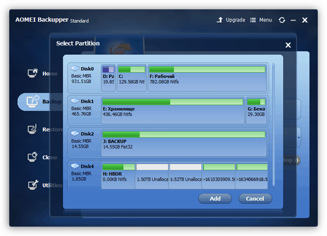

Заголовок

Открой перед тем как читать html файл в редакторе
Тут можно писать весь текст, какой хочешь не создавая новых Тегов.
Также можно делать вот так нахуй для удобства -_-(прямо в файле отделять энтерами текст, чтобы не была строчка длиной в 1 км, невозможно нахуй редактировать потом=zloi-smailik)
Для новой строчки используем тэг -> br
И вот что получается
Пример текста намбер ту
